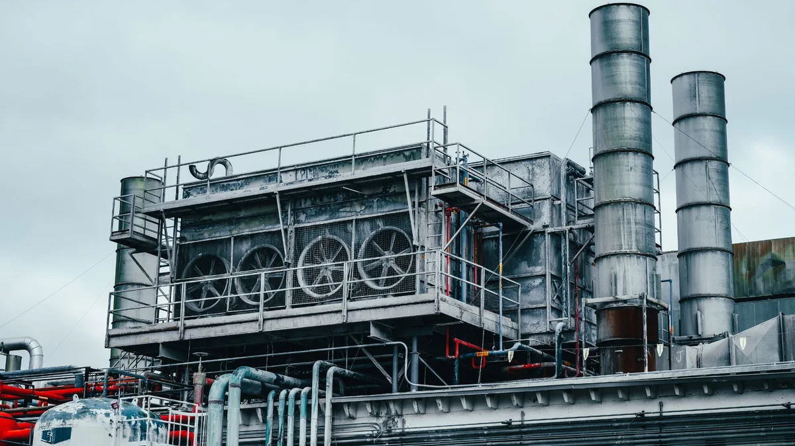
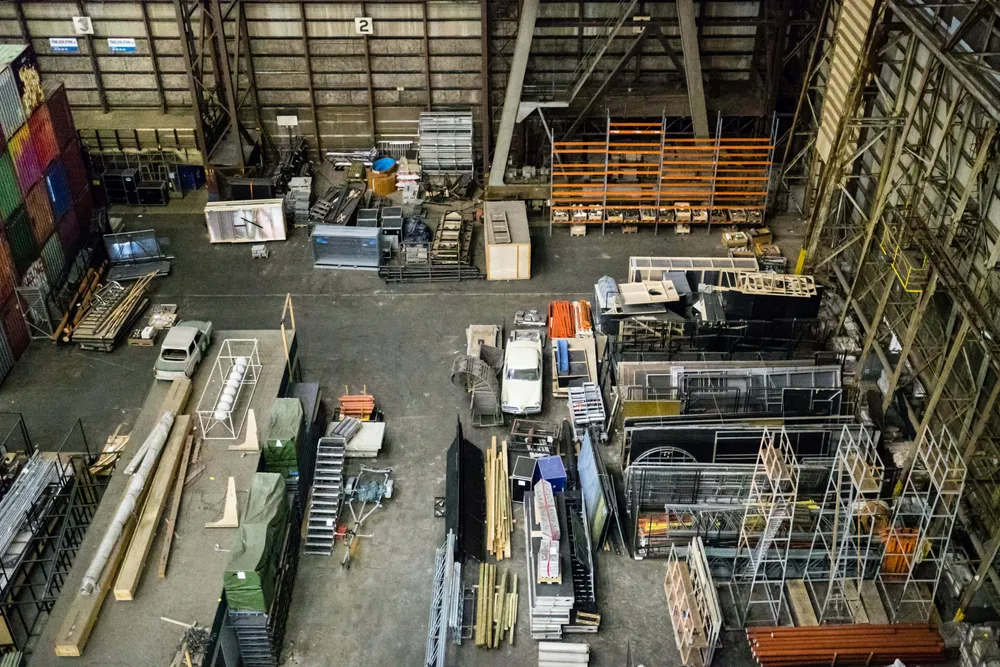
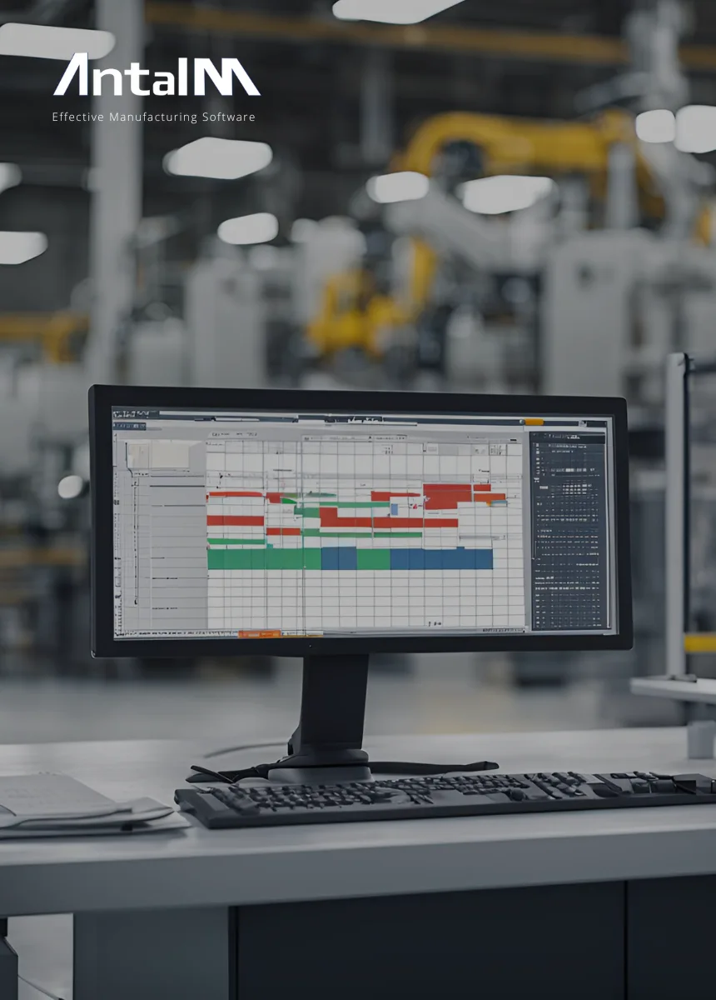
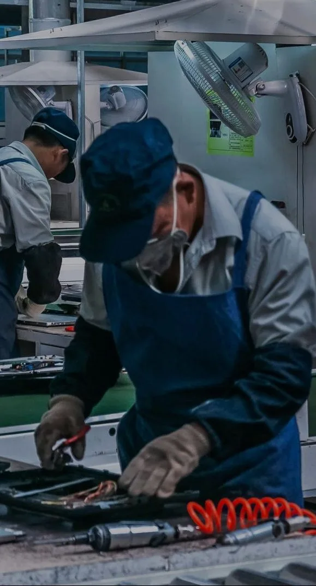

01
Entender
Procesos y prioridades
Revisamos cómo fluye el trabajo, qué sistemas intervienen y cuáles son las restricciones que conviene atender primero.
Retos · información disponible · objetivosNUESTRAS SOLUCIONES
Software y consultoría para coordinar la producción, conocer lo que sucede y cuidar la calidad.


01APS / MANUFACTURA AVANZADA
Demanda, capacidad y recursos en un mismo plan.

02MES / MANUFACTURA AVANZADA
Visibilidad de lo que sucede. Control para actuar.

03APQS / MANUFACTURA AVANZADA
Del diseño del producto a su entrega.
UN PORTAFOLIO, DIFERENTES DECISIONES
Planeación, ejecución, calidad y análisis cumplen funciones complementarias. Revisamos contigo qué capacidad necesita tu operación.
Qué producir, cuánto y cuándo.
Demanda, inventario, capacidad y restricciones.
MESQué ocurre en los centros de trabajo.
Registros de producción, maquinaria y ERP.
APQSCómo gestionar la calidad del producto.
Planeación de calidad, fallas, auditorías y proveedores.
IAQué posibilidades ofrecen tus datos.
Información visual, datos y modelos según tu necesidad.
INTELIGENCIA CONECTADA
El valor aparece cuando planeación, ejecución y análisis comparten el mismo contexto.
Explorar Industrial Intelligence ↗CONSULTORÍA E IMPLEMENTACIÓN
Antes de configurar una solución, hay que entender cómo se planea, cómo se ejecuta y dónde se pierde visibilidad.
Entender
Revisamos cómo fluye el trabajo, qué sistemas intervienen y cuáles son las restricciones que conviene atender primero.
Retos · información disponible · objetivosDefinir
Alineamos requerimientos, intercambios de datos y criterios para configurar la solución alrededor de tu operación.
Sistemas · responsabilidades · configuraciónImplementar
Contrastamos la configuración con los procesos acordados y revisamos el comportamiento antes de incorporarla al trabajo cotidiano.
Revisión funcional · ajustes · puesta en operaciónAcompañar
La adopción requiere seguimiento. El soporte y la mejora continua permiten responder a los cambios del proceso.
Equipo · seguimiento · mejora continuaDE LA COMPLEJIDAD A LA CLARIDAD